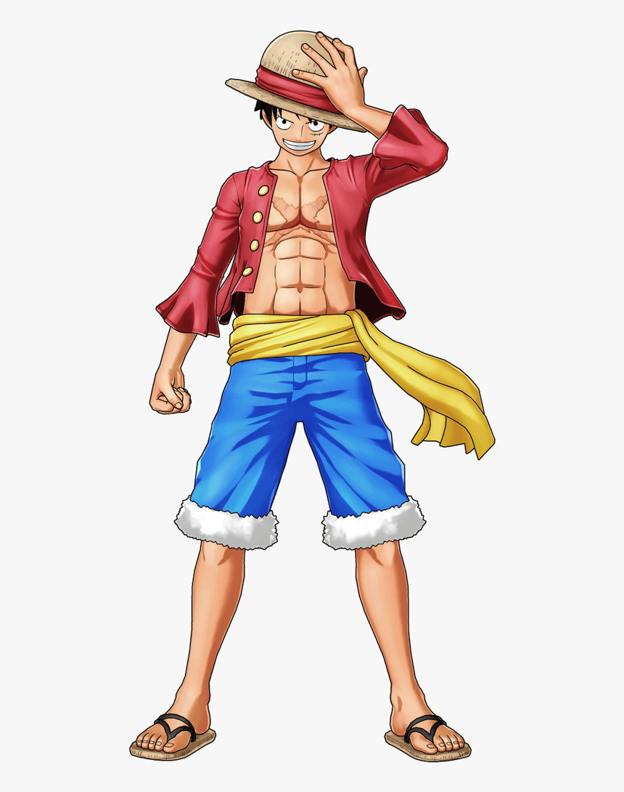
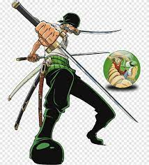
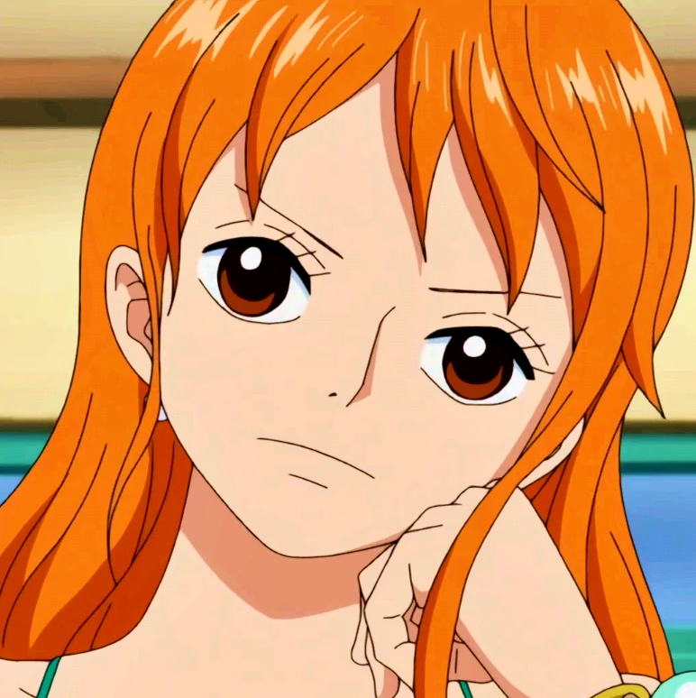

- Luffy
- Zoro
- Nami

Monkey D. Luffy also known as "Straw Hat" Luffy, is a
fictional character and the main protagonist of the One Piece manga
series, created by Eiichiro Oda. Luffy made his debut in One Piece Chapter
#1 as a young boy who acquires the properties of rubber after accidentally
eating the supernatural Gum-Gum Fruit.

Roronoa Zoro, nicknamed "Pirate Hunter" Zoro, is a
fictional character in the One Piece franchise created by Eiichiro Oda. In
the story, Pirate Hunter Zoro is the first to join Monkey D. Luffy after
he is saved from being executed at the Marine Base

Nami is a fictional character in the One Piece franchise
created by Eiichiro Oda. She is based on Ann and Silk, two characters from
Oda's previous manga Romance Dawn. She is introduced as a thief and
pickpocket who possesses cartographical, meteorological and navigational
skills.